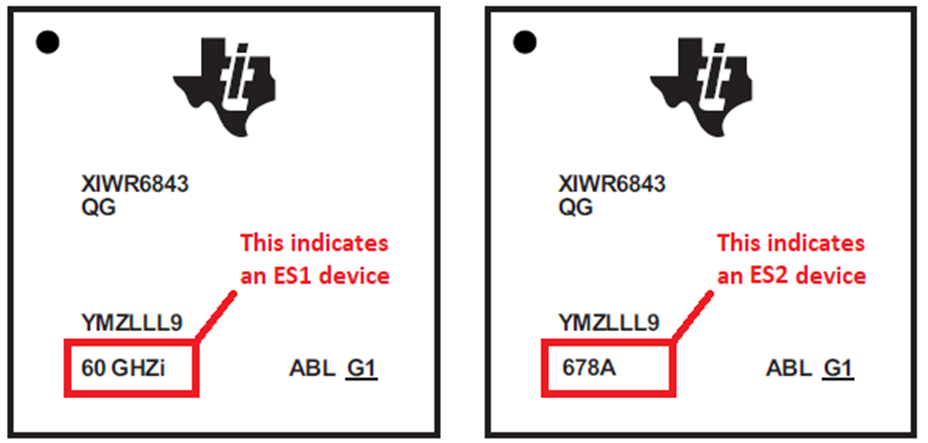

# Overview of Small Obstacle Detection
This lab demonstrates the use of TI mmWave sensors for the detection of obstacles
for robotic lawn mower applications. The range, velocity, and angle data from mmWave
sensors can enable the detection of small objects such as apples or rocks as well as
small animals such as hedgehogs.
The key feature in this lab is an occupancy state machine which helps to enable
zone occupancy detection based on the number of points and their average SNR
in a specified zone.
This lab runs on the xWR6843 mmWave sensor, and includes configurations to
run on the IWR6843ISK evaluation module with a python visualizer.
-----------
# Quickstart
This section will briefly go through how to set up and run the demo for evaluation.
## Requirements
[[y! Run Out of Box Demo
Before continuing with this lab, users should first run the out of box demo for the EVM.
This will enable users to gain familiarity with the sensor's capabilities as well as the various tools used across all labs in the mmWave Industrial Toolbox. ]]
### Hardware
Item | Quantity
------------------|-----------------
Antenna Module Board: [IWR6843ISK](http://www.ti.com/tool/IWR6843ISK) | 1
Micro USB Cable | 1
[[r! IWR6843 ES2.0 Only
This lab is only compatible with ES2.0 version of IWR6843.
On ISK, check the device version on your IWR6843 using the on-chip device markings as shown below
1. If line 4 reads `678A`, you have an ES2 device. In this case, this lab is compatible with your EVM.
2. If line 4 reads `60 GHZi`, you have an older ES1 device. In this case, the lab is NOT compatible with your EVM. ES2 IWR6843ISK boards are orderable from the EVM link above.

]]
### Software
Tool | Version | Download Link
--------------------------|---------------------------|--------
mmWave Industrial Toolbox | Latest | Download and install the toolbox. Go to [Using TI Resource Explorer & the mmWave Industrial Toolbox](../../../../docs/readme.html) for instructions.
Python | 3.6 | Visualizer is built using [Python](https://www.python.org/downloads/release/python-360/)
Uniflash | Latest | Uniflash tool is used for flashing TI mmWave Radar devices. [Download offline tool](http://www.ti.com/tool/UNIFLASH) or use the [Cloud version](https://dev.ti.com/uniflash/#!/)
Silicon Labs CP210x USB to UART Bridge VCP Drivers | Latest | Only needed for if using EVM in standalone mode. [https://www.silabs.com/products/development-tools/software/usb-to-uart-bridge-vcp-drivers](https://www.silabs.com/products/development-tools/software/usb-to-uart-bridge-vcp-drivers)
## 1. Mount the EVM
This demo is intended to be mounted to a moving platform suitable for outdoor
usage in grass. For evaluation, something like a cart or a remote controlled
car can be used to simulate a robotic platform, if one is not available.
The EVM should be mounted low to the ground facing forward, with a slight
uptilt to minimize reflections, as shown below.
<img src="./images/Small_Obstacle_Mounting.jpg" width="300"/>
## 2. Flash the EVM
1. Set the hardware to flashing mode by following the instructions in the [EVM Setup Guide](../../../../docs/hardware_guides/evm_setup_operational_modes.html)
2. Flash the binary corresponding to your device from the prebuilt binaries folder by following the instructions for [using UniFlash](../../../../docs/software_guides/using_uniflash_with_mmwave.html)
3. Set the hardware to functional mode by following the instructions in the [EVM Setup Guide](../../../../docs/hardware_guides/evm_setup_operational_modes.html)
## 3. Run the GUI
1. Launch the GUI by running the executable located in the gui folder of this lab
2. Enter the two COM ports into the proper fields. These can be found by looking at the computer's device manager
3. Select *Small Obstacle Detection* in the *Config Type* dropdown
4. Click connect and ensure it has connected properly. If it does not connect,
please recheck the COM ports and ensure they are not currently in use.
5. Click *Select Configuration* and find the correct chirp configuration file
for your device/EVM from the *chirp_configs* folder of this lab
6. The boundary boxes should now appear on the graph, if not, please recheck
the selectecd configuration file
7. Once the proper configuration is selected, click *Start and Send Configuration*.
After a few moments, points should begin displaying as the device starts chirping
# Developer's Guide
This section will go over how to open and modify the source for both the demo
as well as the visualizer
## Modifying Device Software
### CCS Development Requirements
In addition to the materials required in the [quickstart requirements](#requirements),
the following resources are needed/suggested
Tool | Version | Download Link
--------------------------|---------------------------|--------
TI mmWave SDK | 3.5.0.4 | [Link to Latest mmWave SDK](https://www.ti.com/tool/MMWAVE-SDK). To access a previous version, click *Download Options* and then *View all versions*
Code Composer Studio | Latest | [CCS Tool Page](https://www.ti.com/tool/CCSTUDIO)
### Importing CCS Projects
After downloading the necessary software, open CCS and perform the
first time setup, which will configure the workspace and install the
necessary modules.
Once CCS is open to the standard view, go to the project explorer pane,
right click, select *Import*, and then select *CCS Projects*. At the
top of window, next to *Select search directory*, click *browse*. You
will now want to navigate using your file explorer to your installation
location for the mmWave Industrial Toolbox, and then go to the directory
for this lab. Once in the *Small_Obstacle_Detection* folder, click the
*Select Folder* button. Once this is done, you should see a list of projects
in the directory populate the previous window. Check the box next to the
proper MSS project for your device (which should automatically pull in the
DSS project) and then hit finish.
### Building the Project in CCS
At this point, you can now begin to make modifications to the project
as desired.
Once you are ready to build, right click the DSS project
and select *Build Project*. This may take a few minutes. Once complete,
you should either see a build finished message in the console or errors
in the *problems* pane. If it has successfully built, you can then go
to the output folder, which is named after the build configuration (typically *Debug*), and
see a file with a .xe674 extension, which is the image that can be used
for debugging the DSS.
Next, you will want to repeat this process for the MSS project. It is
important that the DSS project is built **prior** to building the MSS
project, so that the post-build steps on the MSS can create the combined binary.
Once the MSS has successfully built, the output folder should contain
2 files of interest. The first will have a .xer4f extension, which can
be used to debug the MSS. The second file will be have a .bin extension,
which can be used to flash the device in order to run without debugging.
### Flashing the Built Project
If you want to run the demo without debugging, follow the steps in
[Quickstart](#Quickstart) for flashing, but instead you will want to
flash the binary that has been built by the MSS project. This can be
found by going to the following directory
`<CCS_Workspace>\<lab_name>_mss\<build_configuration>\<demo_name>.bin`
If you intend to step through and debug using CCS, please follow the
steps in the [CCS Debugging Guide](../../../../docs/software_guides/using_ccs_debug)
to load the images generated by the DSS and MSS projects. Please note
that this requires the mmWaveICBoost EVM in addition to the antenna
module.
## Work with GUI Source Code
The source files for this GUI are located in the following directory:
`<INDUSTRIAL_TOOLBOX_INSTALL_DIR>\mmwave_industrial_toolbox_<VER>\labs\People_Counting\visualizer`
In order to launch the GUI from source, you will need to have the proper
python modules installed, which can are included in the environment setup
batch file that can be found in the visualizer source directory. Once installed,
it can be launched via a terminal with the command `py gui_main.py`. This
enables changes to be made to the python visualizer and tested easily.
# Interfacing with the Device via UART
Similar to the majority of the other mmWave Industrial Toolbox labs, this lab
utilizes a pair of UART COM ports to communicate with a host PC. The CLI port
is used to send commands to the device for configuration (typically by sending a cfg file)
while the data port is used to stream data from the device to the host after
the device has began chirping.
## CLI Commands
This demo supports all CLI commands implemented by the xWR6843 Out Of Box Demo as
well as some unique commands. For details on CLI commands implemented in the
Out Of Box Demo, please refer to the [mmWave SDK User's Guide,](https://software-dl.ti.com/ra-processors/esd/MMWAVE-SDK/03_05_00_04/exports/mmwave_sdk_user_guide.pdf)
specifically the section titled *Configuration File Format*
In addition to the Out Of Box Demo commands, this lab has added the following additional commands:
CLI Command | Parameter | Description
----------------|---------------------------|------------
occStateMach | zoneCount | Number of boundary zones to compute occupancy on
| pointsEntryThreshold | Number of points required in the zone for the zone to enter the *occupied* state
| snrEntryThreshold | Average SNR value of the points in the zone that is required for the zone to enter the *occupied* state
| frameEntryThreshold | Number of frames where the entry parameters must be met in a row for the zone to enter the *occupied* state
| pointsMaintainThreshold | Number of points required in the zone for the zone to remain in the *occupied* state
| snrMaintainThreshold | Average SNR value of the points in the zone that is required for the zone to remain in the *occupied* state
| pointsExitThreshold | Number of points required in the zone for the zone to enter the *unoccupied* state
| frameExitThreshold | Number of frames that do not meet the *maintenance* threshholds that are required to enter the *unoccupied* state
| |
zoneDef | zoneIdx | Index of this zone
| minX | Minimum X value of the zone (meters)
| maxX | Maximum X value of the zone (meters)
| minY | Minimum Y value of the zone (meters)
| maxY | Maximum Y value of the zone (meters)
| minZ | Minimum Z value of the zone (meters)
| maxZ | Maximum Z value of the zone (meters)
## Output Data Format
This lab leverages the same output format as the xWR6843 Out Of Box Demo
with an additional Type-Length-Value (TLV) packet for the occupancy information.
For more information on the Out Of Box Demo output format, please refer to
the [Understanding OOB UART Data guide](../../../Out_Of_Box_Demo/docs/understanding_oob_uart_data.html)
and the [mmWave SDK User's Guide](https://software-dl.ti.com/ra-processors/esd/MMWAVE-SDK/03_05_00_04/exports/mmwave_sdk_user_guide.pdf).
Below is the information regarding the additional TLV:
**Type:** 700
**Length:** 4 Bytes
**Value:** Bit Mask of Zone Occupancy results. Each bit represents a zone, where 1 indicates occupied and 0 indicates unoccupied.
| Value | Type | Bytes |
|-----------------------------------|------------------|-------|
| Occupancy State Machine Output | Unsigned Integer | 4 |
# Tuning
When tuning this lab, there are a few key configurable options that you may
want to modify when tuning and testing the lab.
## Configuring the Occupancy Zones
One of the first things you will likely want to do when tuning the lab is
to modify the occupancy zone size and locations to fit your mounting and use case
To start, determine the number of zones necessary for the application. For example,
you may want 2 zones, so that there can be a warning/slow zone that is farther away
while having a stop zone that is closer to the sensor and mobile platform.
In some cases, there may be no desired behavior difference between the two areas,
so then only one may be needed. Once the number of zones is decided, the
first parameter of the **occStateMach** cfg command can be set.
The **minZ** value will be determined by the height of the sensor from the ground. In general, this
value should be as high as possible while still being able to detect the desired
obstacles. This helps to minimize the impact that the ground will have on the
zones' occupancy decisions. For example, if the sensor is mounted 0.35 meters
above the ground, a **minZ** value of -0.3 may be beneficial for each zone.
The **maxZ** value of a zone should be set to be the appoximate distance
from the device to the maximum height of the mobile platform.
The **minX** and **maxX** values will be determined
by the width of the mobile platform. For example, if the device is mounted in
the center of the platform, and the platform is 1 meter wide, a **minX** value of -0.5
and a **maxX** value of 0.5 would be appropriate.
The **minY** value for each zone may differ for each zone if a multi-zone configuration is used.
This value will determine how far from the sensor the zone begins. If a zone
should start right at the sensor, then a **minY** of 0 is suggested. However,
if multiple zones are used, the **minY** of one zone should likely be greater
than the **maxY** of the other zone, to avoid unwanted behavior if the zones intersect.
The **maxY** value will determine how far away an obstacle will be detected.
This value should be a realistic value as to when action should be taken by the
system in order to ensure safety. Setting this value too high may result in false
detections.
## Occupancy State Machine Tuning
In order to ensure the state machine moves between states in proper scenarios, the parameters are fully configurable.
If obstacles are not triggering occupied states, the **pointsEntryThreshold**, **snrEntryThreshold**, and **frameEntryThreshold** may need to be lowered.
If obstacles are triggering "flickering" in a zone's state, **pointsMaintainThreshold** and **snrMaintainThreshold** may need to be lowered
If zones are staying occupied after obstacles are no longer in the zones, then **pointsMaintainThreshold**, **snrMaintainThreshold>**, **pointsExitThreshold**, or **frameExitThreshold**
may need to be raised.
## Tuning the Point Cloud
If the point cloud for certain objects is too sparse, then the **cfarCfg**
**threshold** parameter may need to be lowered.
------
# Need More Help?
* Additional resources in the documentation of the mmWave SDK:
* mmWave SDK Module Doc located at `<mmwave_sdk_install_dir>/docs/mmwave_sdk_module_documentation.html`
* mmWave SDK User's Guide located at `<mmwave_sdk_install_dir>/docs/mmwave_sdk_user_guide.pdf`
* Search for your issue or post a new question on the [mmWave E2E forum](https://e2e.ti.com/support/sensor/mmwave_sensors/f/1023)